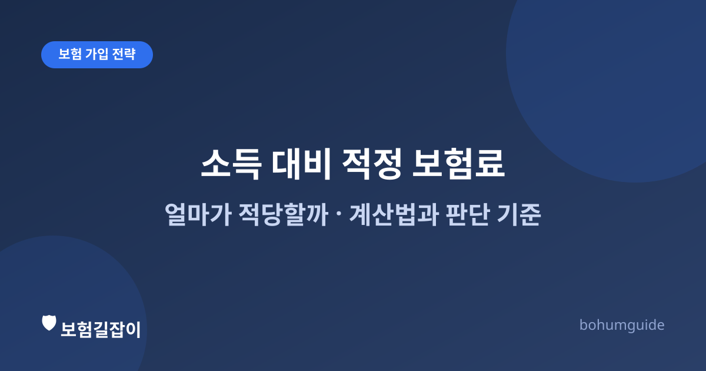

소득 대비 적정 보험료, 얼마가 적당할까
"보험료로 매달 얼마나 나가고 있는지 정확히 아시나요?" 여러 개를 나눠 가입하다 보면 총액을 놓치기 쉽습니다. 적정 비중을 가늠하는 기준과 과다·과소 가입 신호를 정리했습니다.

✍️ 편집자 참고: 본 글은 초안입니다. 아래 비중은 일반적으로 통용되는 참고치이며 절대적 기준이 아니므로, 게시 전 개인 재무상담 관점의 검수를 권합니다.
실손보험, 암보험, 자동차보험, 운전자보험, 연금까지 하나씩 가입하다 보면 어느 순간 보험료 총액이 얼마인지 감이 잡히지 않게 됩니다. 문제는 "보험은 많을수록 안심"이라는 생각으로 계속 늘리기만 하다가, 정작 월 생활비를 압박하는 수준까지 가는 경우입니다. 반대로 보험료를 아낀다고 꼭 필요한 보장까지 빼 버리면, 정작 사고나 진단이 났을 때 감당하지 못할 수 있습니다. 이 글은 그 사이에서 균형을 잡는 기준을 정리합니다.
흔히 말하는 적정 비중, 어디까지 참고할 수 있을까
보험업계나 재무 상담에서는 월 소득의 8~10% 안팎을 보장성 보험료의 참고 기준으로 이야기하는 경우가 많습니다. 다만 이는 절대적인 규칙이 아니라 여러 상황을 뭉뚱그린 일반론에 가깝습니다. 부양가족 수, 이미 보유한 자산, 국민건강보험·고용보험 같은 공적 보장 수준, 직업의 위험도에 따라 적정선은 크게 달라질 수 있습니다. 숫자 자체보다는 "이 비율이 왜 나에게 맞는지 스스로 설명할 수 있는가"가 더 중요한 기준입니다.
| 요소 | 비중을 높여도 되는 경우 | 비중을 낮게 가져가도 되는 경우 |
|---|---|---|
| 부양가족 | 외벌이·자녀 있음 | 1인 가구·맞벌이 |
| 자산·비상금 | 비상자금이 적음 | 충분한 예비자금 보유 |
| 직업 위험도 | 사고·질병 위험이 높은 직군 | 상대적으로 안정적인 직군 |
표는 방향성을 보여주는 참고용이며, 실제 결정은 개인의 재정 상황을 종합적으로 고려해야 합니다.
과다 가입 신호
- 여러 보험에서 비슷한 보장이 중복되고 있다(실손 중복, 진단비 중복 등). 중복 여부는 실손보험 중복가입하면 두 배 받을까에서 원리를 확인할 수 있다.
- 보험료 납입 때문에 저축이나 비상자금 마련이 계속 뒤로 밀린다.
- 어떤 보험에 어떤 보장이 들어 있는지 스스로도 잘 설명하지 못한다.
- 설계사 권유로 가입은 했지만, 왜 그 담보가 필요한지 이유를 기억하지 못한다.
과다 가입이 의심된다면 무작정 해지하기보다, 보험 리모델링, 무작정 갈아타면 안 되는 이유를 먼저 읽고 순서대로 점검하는 것이 안전합니다.
과소 가입 신호
- 실손보험 외에 진단비·수술비 등 정액 보장이 전혀 없다. 실손과 정액보장의 역할 차이는 정액형 건강보험과 실손보험의 차이에서 확인할 수 있다.
- 가족 중 주 소득자에게 사망·후유장해 보장이 없어, 만약의 경우 남은 가족의 생활비 공백이 그대로 드러난다.
- 자동차를 운행하는데 운전자보험(형사합의금·벌금 등 대인 리스크 대비)이 없다.
- 보험료를 아끼려고 필수 담보까지 빼서, 있으나 마나 한 보장만 남아 있다.
가입 우선순위를 정하는 순서
예산이 제한적이라면 다음 순서를 참고할 만합니다. ① 실손의료보험(일상적 의료비 대비) → ② 진단비·수술비 등 정액 보장(큰 병 대비) → ③ 자동차·운전자보험(운행 중이라면) → ④ 사망·소득보장(부양가족이 있는 경우) → ⑤ 저축성·연금(여유 자금이 생긴 이후). 저축성 보험은 보장성 보험료 비중과 별도로 계산하는 것이 혼란을 줄입니다. 생애 주기별로 우선순위가 어떻게 달라지는지는 사회초년생이 가장 먼저 챙길 보험은과 신혼부부의 보험 점검 체크포인트에서 더 자세히 다룹니다.
지금 바로 점검하는 법
- 보유한 모든 보험의 증권을 꺼내 월 보험료 총액을 더해 본다.
- 총액을 월 소득으로 나눠 대략적인 비중을 계산해 본다.
- 각 보험이 어떤 보장을 위한 것인지, 왜 가입했는지 한 줄로 적어 본다. 설명이 안 되는 보험은 재점검 대상이다.
- 실손·진단비·사망보장·자동차 관련 보장 중 빠진 항목은 없는지 확인한다.
보험료가 어떻게 구성되는지 원리부터 알고 싶다면 보험료 계산 원리를, 가입 전 전체 체크리스트가 필요하다면 가입 전 체크리스트를 함께 참고하세요.
요약
보장성 보험료는 흔히 소득의 8~10% 안팎이 참고 기준으로 언급되지만, 부양가족·자산·직업 위험도에 따라 적정선은 달라집니다. 중복 보장으로 보험료가 과다한지, 반대로 꼭 필요한 보장이 빠져 있지는 않은지 정기적으로 점검하고, 예산이 제한적이라면 실손 → 정액보장 → 자동차·운전자보험 → 사망·소득보장 → 저축성 순으로 우선순위를 정하는 것이 합리적입니다.
참고할 수 있는 공신력 있는 자료
- 금융감독원 — 금융·보험 소비자 보호 및 안내
- 금융소비자 정보포털 파인 — 보유 보험 통합 조회·비교
- 생명보험협회 — 생명보험 상품·제도 안내
본 정보는 일반적인 안내이며, 적정 보험료 수준과 가입 우선순위는 개인의 소득·자산·부양가족 상황에 따라 달라지므로 전문가 상담을 함께 권합니다.